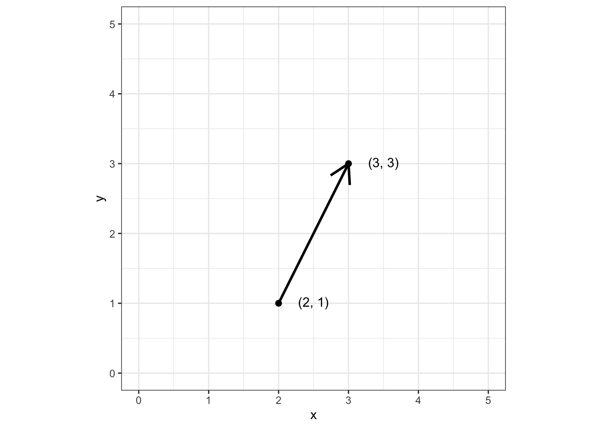
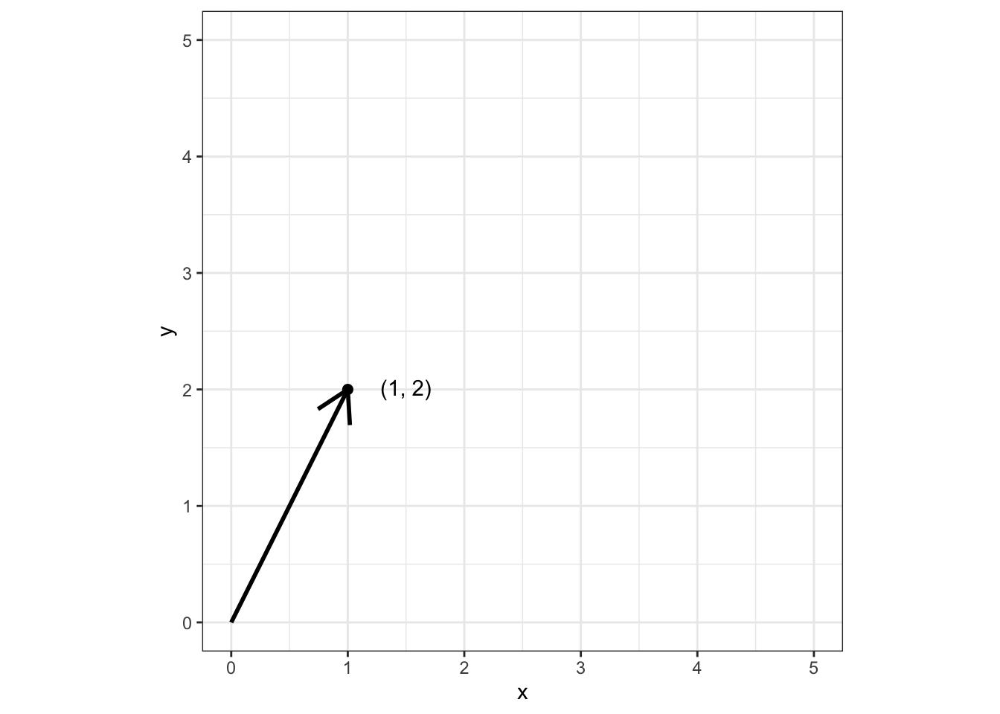
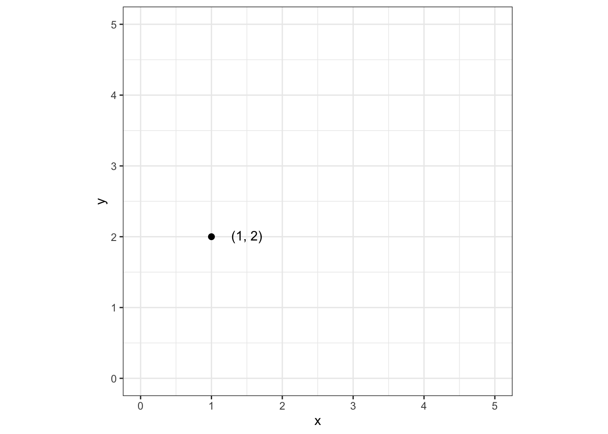
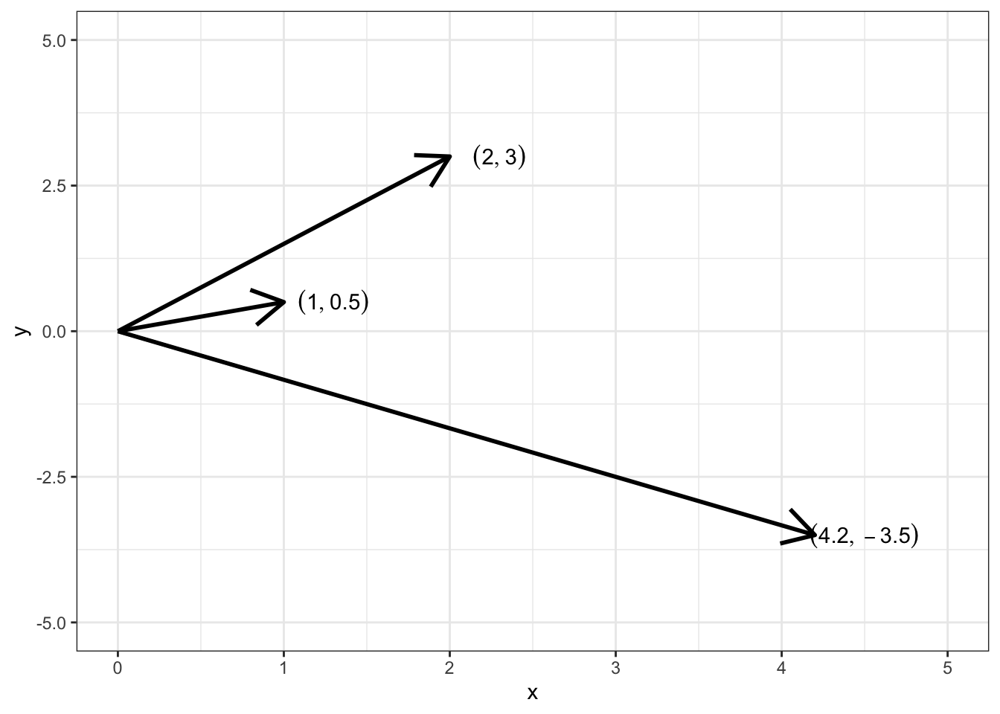

2 + 3 # сложение[1] 54 - 1 # вычитание[1] 35 * 12 # умножение[1] 605 ^ 8 # возведение в степень[1] 3906254 / 7 # деление[1] 0.57142865 %/% 3 # целочисленное деление[1] 15 %% 3 # остаток от деления[1] 2Чтобы стать счастливым пользователем R, надо установить на свой комп две программы:
Причем во избежание возможных проблем, надо поставить программы именно в этом порядке — сначала R, а потом RStudio, иначе IDE может на найти R и будет ругаться.
В R нет команд и практически нет ключевых слов, распространенных в других языках программирования. Практически все операции обернуты в функции. Остаются только математические и логические операторы, которые, на самом деле, тоже функции.
Все в наличии:
2 + 3 # сложение[1] 54 - 1 # вычитание[1] 35 * 12 # умножение[1] 605 ^ 8 # возведение в степень[1] 3906254 / 7 # деление[1] 0.57142865 %/% 3 # целочисленное деление[1] 15 %% 3 # остаток от деления[1] 2Скобки также существуют и привычно работают:
6 / 3 + 2 * 4[1] 106 / (3 + 2) * 4[1] 4.86 / ((3 + 2) * 4)[1] 0.3Можно посчитать корень:
sqrt(16)[1] 4Или логарифм:
log(10)[1] 2.302585log(8, base = 2)[1] 3log(8, 2)[1] 3Или что-то на тригонометрическом:
sin(5); cos(5); tan(5)[1] -0.9589243[1] 0.2836622[1] -3.380515Кстати, можно и вот так — это к тому, что математические операторы тоже являются функциями:
`+`(2, 3)[1] 5`^`(4, 5)[1] 1024`/`(8, 3)[1] 2.666667К логическим операциями можно отнести операции сравнения:
5 > 4 # больше[1] TRUE6 < 2 # меньше[1] FALSE5 >= 5 # больше или равно[1] TRUE6 <= 3 # меньше или равно[1] FALSE23 == 14 # равно[1] FALSE77 != 98 # не равно[1] TRUEА также логические операторы И (&) и ИЛИ (|):
TRUE & TRUE[1] TRUETRUE & FALSE[1] FALSEFALSE & FALSE[1] FALSETRUE | TRUE[1] TRUETRUE | FALSE[1] TRUEFALSE | FALSE[1] FALSEРезультаты вычислений и преобразований хотелось бы сохранять, поэтому в R существует оператор присваивания <-:
x <- 5
y <- 4 * 8Можно, конечно, написать и x = 5, но сообщество вас не поймет и будет косо смотреть… Когда мы присвоим некоторой переменной какой-либо объект, он отобразиться в окошке Environment, и с ним можно будет работать. Например, совершать разные операции:
x + y[1] 37sqrt(x)[1] 2.236068log(y, base = x)[1] 2.153383Объектом в R может быть вообще все, что угодно — число, строка, вектор, матрица, датафрейм, таблица, результат моделирования, функция и т.д.
Тип данных — это характеристика данных, которая определяет:
numericЭто числа с десятичной частью.
class(3.14)[1] "numeric"typeof(3.14)[1] "double""double" нам говорит о том, что числа с десятичной частью храняться в R с двойной точностью. И это хорошо.
integerЭто целые числа.
class(3)[1] "numeric"Правда чтобы создать именно целое число, надо указать, что мы хотим именно целое число с помощью литерала L:
class(3L)[1] "integer"typeof(3L)[1] "integer"По умолчанию объект типа 3 воспринимается R как 3.0, поэтому тип данных будет numeric.
complexКомплексные числа тоже существуют, но я даже не знаю, когда вам придется их использовать.
class(2+3i)[1] "complex"characterТекст тоже надо как-то хранить.
s1 <- 'a'
s2 <- "это строка"
class(s1)[1] "character"class(s2)[1] "character"Кавычки не важны, если у вас не встречаются кавычки внутри кавычек. Тогда надо использовать разные:
s <- 'Мужчина громко зашёл в комнату и высказал решительное "здравствуйте"'
s[1] "Мужчина громко зашёл в комнату и высказал решительное \"здравствуйте\""factorБывают такие переменные, которые группируют наши данные. Например,
Москва, Санкт-Петербург, Казань, Екатеринбург)бакалавриат, специалитет, магистратура, аспирантура)group1, group2, control)Обычно они текстовые. Для них был придуман тип данных factor, чтобы их было дешевле хранить. Однако большинство современных пакетов сами могут решить, когда надо текст перевести в фактор.
Ordered factor (упорядоченный фактор) — тип данных, который позволяет задать порядок групп. Например,
bachelor < master < phd < postdoceasy < medium < hardВот упорядоченный фактор нам время от времени может понадобиться — например, для создания визуалиация или в некоторых статистических моделях.
NAПропущенное значение (Not Available). Обозначает отсутствие значения там, где оно вроде бы должно быть. Причины могут быть разные:
NA, чтобы далее с ними работатьNaNЭто не число (Not a Number).
0 / 0[1] NaNNULLЭто ничто. Пустота. Используется для задания аргументов функций.
Структура данных — это способ и форма объединения однотипных и/или логически связанных данных.

Воплощение привычной нам «таблицы» в R.
# A tibble: 6 × 10
carat cut color clarity depth table price x y z
<dbl> <ord> <ord> <ord> <dbl> <dbl> <int> <dbl> <dbl> <dbl>
1 0.23 Ideal E SI2 61.5 55 326 3.95 3.98 2.43
2 0.21 Premium E SI1 59.8 61 326 3.89 3.84 2.31
3 0.23 Good E VS1 56.9 65 327 4.05 4.07 2.31
4 0.29 Premium I VS2 62.4 58 334 4.2 4.23 2.63
5 0.31 Good J SI2 63.3 58 335 4.34 4.35 2.75
6 0.24 Very Good J VVS2 62.8 57 336 3.94 3.96 2.48Это сложная структура данных. Чтобы понять всю её мощь, необходимо начать с более простых.
Вектор — это набор чисел.
\[ \pmatrix{1 & 4 & 36 & -8 & 90.1 & -14.5} \]
Если это утверждение вызывает у вас внутренний протест, давай проследим пусть от направленного отрезка в набору чисел.
Возьмем направленный отрезок — вектор:
Warning in is.na(x): is.na() applied to non-(list or vector) of type
'expression'
Warning in is.na(x): is.na() applied to non-(list or vector) of type
'expression'
Именно так мы понимали вектор в школе. Договоримся, что все векторы у нас начинаются из точки \((0, 0)\):
Warning in is.na(x): is.na() applied to non-(list or vector) of type
'expression'
Если теперь у нас все вектора начинаются из начал координат, то мы можем полностью описать вектор только координатами его конца. Поэтому уберем вектор:
Warning in is.na(x): is.na() applied to non-(list or vector) of type
'expression'
То есть для нас теперь вектор равносилен точке на плоскости. А точка однозначно описывается двумя координатами. Получается, можно просто записать:
\[ \pmatrix{1 & 2} \]
Получается, что это одно и то же:
\[ \pmatrix{1 & 0.5}, \quad \pmatrix{2 & 3}, \quad \pmatrix{4.2 & -3.5} \]
Warning in is.na(x): is.na() applied to non-(list or vector) of type
'expression'
Теперь обобщим вектор на более общие случаи:
Вектор — это набор некоторого колчиества элементов одного типа.
v_num <- c(1, 6, -34, 7.7) # числовой вектор
v_char <- c("Москва", "Санкт-Петербург", "Нижний Новгород", "Пермь") # текстовый вектор
v_log <- c(TRUE, FALSE, TRUE, TRUE) # логический векторclass(v_num)[1] "numeric"v_num[1] 1.0 6.0 -34.0 7.7class(v_char)[1] "character"v_char[1] "Москва" "Санкт-Петербург" "Нижний Новгород" "Пермь" class(v_log)[1] "logical"v_log[1] TRUE FALSE TRUE TRUEИз вектора можно вытащить его элемент:
v_char[2] # по номеру[1] "Санкт-Петербург"v_num[v_num > 5] # по условию[1] 6.0 7.7Для того, чтобы выполнить операцию на всем векторе поэлементно, не нужно перебирать его элементы.
vec <- 1:4
vec - 1[1] 0 1 2 3vec^2[1] 1 4 9 16sqrt(vec)[1] 1.000000 1.414214 1.732051 2.000000Если мы будем, например, складывать два вектора разной длины, то более короткий зациклится.
vec1 <- 1:10
vec2 <- 1:2
vec1 [1] 1 2 3 4 5 6 7 8 9 10vec2[1] 1 2vec1 + vec2 [1] 2 4 4 6 6 8 8 10 10 12Если мы желаем приблизиться к датафрейму, то одного ряда элементов нам недостаточно — надо выходить во второе измерение! Поэтому уложим вектор в матрицу:

Или вот еще разные варианты:
v <- 1:12
m1 <- matrix(v, nrow = 3)
m1 [,1] [,2] [,3] [,4]
[1,] 1 4 7 10
[2,] 2 5 8 11
[3,] 3 6 9 12m2 <- matrix(v, nrow = 4)
m2 [,1] [,2] [,3]
[1,] 1 5 9
[2,] 2 6 10
[3,] 3 7 11
[4,] 4 8 12m3 <- matrix(v, nrow = 3, byrow = TRUE)
m3 [,1] [,2] [,3] [,4]
[1,] 1 2 3 4
[2,] 5 6 7 8
[3,] 9 10 11 12m4 <- matrix(v, nrow = 4, byrow = TRUE)
m4 [,1] [,2] [,3]
[1,] 1 2 3
[2,] 4 5 6
[3,] 7 8 9
[4,] 10 11 12Из матрицы можно вытащить её элементы:
m1 [,1] [,2] [,3] [,4]
[1,] 1 4 7 10
[2,] 2 5 8 11
[3,] 3 6 9 12m1[2, 3] # отдельный элемент[1] 8m1[1, ] # целую строку[1] 1 4 7 10m1[, 4] # целый столбец[1] 10 11 12m1[1:2, 2:4] # часть матрицы [,1] [,2] [,3]
[1,] 4 7 10
[2,] 5 8 11c(2, TRUE)[1] 2 1c(2, TRUE, "word")[1] "2" "TRUE" "word"При объединении разных типов данных в одном массиве происходит приведение типов (coercion) по следующей иерархии:
logical → integer → numeric → complex → character
Это нам осложняет жизнь, так как мы бы хотели объединять данные разных типов в одну структуру.
Списки позволяют объединять массивы различных типов данных, чем делают нашу жизнь значительно приятнее.

Например, так:
l <- list(v1 = v_num,
v2 = v_char,
m1 = m1,
ls = list(v = v,
m = m3))
l$v1
[1] 1.0 6.0 -34.0 7.7
$v2
[1] "Москва" "Санкт-Петербург" "Нижний Новгород" "Пермь"
$m1
[,1] [,2] [,3] [,4]
[1,] 1 4 7 10
[2,] 2 5 8 11
[3,] 3 6 9 12
$ls
$ls$v
[1] 1 2 3 4 5 6 7 8 9 10 11 12
$ls$m
[,1] [,2] [,3] [,4]
[1,] 1 2 3 4
[2,] 5 6 7 8
[3,] 9 10 11 12l[1] # по номеру элемента, возвращается список$v1
[1] 1.0 6.0 -34.0 7.7l[[1]] # по номеру элемента, возвращается массив[1] 1.0 6.0 -34.0 7.7l$ls # по названию элемента$v
[1] 1 2 3 4 5 6 7 8 9 10 11 12
$m
[,1] [,2] [,3] [,4]
[1,] 1 2 3 4
[2,] 5 6 7 8
[3,] 9 10 11 12l$ls$m # можно идти многоуровнево [,1] [,2] [,3] [,4]
[1,] 1 2 3 4
[2,] 5 6 7 8
[3,] 9 10 11 12
Для примера возьмем датафрейм про бриллианты:
diam# A tibble: 6 × 10
carat cut color clarity depth table price x y z
<dbl> <ord> <ord> <ord> <dbl> <dbl> <int> <dbl> <dbl> <dbl>
1 0.23 Ideal E SI2 61.5 55 326 3.95 3.98 2.43
2 0.21 Premium E SI1 59.8 61 326 3.89 3.84 2.31
3 0.23 Good E VS1 56.9 65 327 4.05 4.07 2.31
4 0.29 Premium I VS2 62.4 58 334 4.2 4.23 2.63
5 0.31 Good J SI2 63.3 58 335 4.34 4.35 2.75
6 0.24 Very Good J VVS2 62.8 57 336 3.94 3.96 2.48Датафрейм наследует свойства списка и матрицы, что делает его невероятно гибким в обращении и крайне удобным в работе:
diam$carat # вытащить столбец[1] 0.23 0.21 0.23 0.29 0.31 0.24diam[diam$price > 330, ] # отобрать строки по условию# A tibble: 3 × 10
carat cut color clarity depth table price x y z
<dbl> <ord> <ord> <ord> <dbl> <dbl> <int> <dbl> <dbl> <dbl>
1 0.29 Premium I VS2 62.4 58 334 4.2 4.23 2.63
2 0.31 Good J SI2 63.3 58 335 4.34 4.35 2.75
3 0.24 Very Good J VVS2 62.8 57 336 3.94 3.96 2.48diam[, c(2:3, 7)] # вытащить столбцы по номерам# A tibble: 6 × 3
cut color price
<ord> <ord> <int>
1 Ideal E 326
2 Premium E 326
3 Good E 327
4 Premium I 334
5 Good J 335
6 Very Good J 336diam[1:4, c("carat", "price")] # вытащить отдельные строки по номерам и столбцы по названиям# A tibble: 4 × 2
carat price
<dbl> <int>
1 0.23 326
2 0.21 326
3 0.23 327
4 0.29 334Если какой-либо кусок кода повторяется более трех раз, имеет смысл обернуть его в функцию.
Как стоит понимать функцию?
Функция — это некий черный ящик, который
Синтаксис создания функции выглядит так:
function_name <- function(arguments) {
...
body
...
return()
}Элементы функции:
function_name) — как мы к ней будем обращаться при вызовеarguments) — какие значения и объекты она принимает на входbody) — что она делает с входными объектамиreturn()) — что функция вернет в качестве результата работыВызов функции:
function_name(arguments)cot <- function(x) {
result <- 1 / tan(x)
return(result)
}
cot(3)[1] -7.015253Если функция простая, можно не создавать временные объекты:
cot <- function(x) {
return(1 / tan(x))
}
cot(3)[1] -7.015253Если функция короткая, можно даже не писать return():
cot <- function(x) {
1 / tan(x)
}
cot(3)[1] -7.015253Осторожно, большое!
Это функция, которая занималась предобработкой данных в реальном проекте. Прикиньте, если бы мы такой кусок кода повторяли для каждого датасета… — жуть!
mr_preproc <- function(d) {
require(tidyverse)
d |> select(
# select columns we need
"Индивидуальный_код",
correctAns,
base_pic,
rotated_pic,
resp_MR_easy.keys,
resp_MR_easy.corr,
resp_MR_easy.rt
) |>
drop_na() |> # remove technical NAs (recording artefacts, not missing data)
mutate(task = "MR",
# add task name (mental rotation)
level = "easy",
# add difficulty level
trial = 1:16) |> # number trials
rename(
"id" = "Индивидуальный_код",
# rename columns for handy usage
"key" = resp_MR_easy.keys,
"is_correct" = resp_MR_easy.corr,
"rt" = resp_MR_easy.rt
) -> MR_easy # ready to use
d |> select(
# select columns we need
"Индивидуальный_код",
correctAns,
base_pic,
rotated_pic,
resp_MR_medium.keys,
resp_MR_medium.corr,
resp_MR_medium.rt
) |>
drop_na() |> # remove technical NAs (recording artefacts, not missing data)
mutate(task = "MR",
# add task name (mental rotation)
level = "medium",
# add difficulty level
trial = 1:16) |> # number trials
rename(
# rename columns for handy usage
"id" = "Индивидуальный_код",
"key" = resp_MR_medium.keys,
"is_correct" = resp_MR_medium.corr,
"rt" = resp_MR_medium.rt
) -> MR_medium # ready to use
d |> select(
# select columns we need
"Индивидуальный_код",
correctAns,
base_pic,
rotated_pic,
resp_MR_hard.keys,
resp_MR_hard.corr,
resp_MR_hard.rt
) |>
drop_na() |> # remove technical NAs (recording artefacts, not missing data)
mutate(task = "MR",
# add task name (mental rotation)
level = "hard",
# add difficulty level
trial = 1:16) |> # number trials
rename(
# rename columns for handy usage
"id" = "Индивидуальный_код",
"key" = resp_MR_hard.keys,
"is_correct" = resp_MR_hard.corr,
"rt" = resp_MR_hard.rt
) -> MR_hard # ready to use
# bind all conditions of mental rotation task to one tibble
bind_rows(MR_easy, MR_medium, MR_hard) -> MR
return(MR)
}Иногда при написании функции может понадобиться обработать какие-то важные случаи.
Для этого подойдет условный оператор.
if (condition) {
...
body
...
} else {
...
body
...
}Допустим, нам жизненно неободима функция, которая будет определять, является число четным или нечетным, потому что сами мы постоянно путаемся…
Вот она:
odd_even <- function(x) { # функция принимает на вход число
if (x %% 2 == 0) { # проверяет, равняется ли нулю остаток от деления числа на два
return("even") # возвращает "even", если равняется
} else {
return("odd") # возвращает "odd", если нет
}
}odd_even(2)[1] "even"odd_even(34)[1] "even"odd_even(11)[1] "odd"odd_even(135)[1] "odd"Работает!
ms_preproc <- function(d) {
require(tidyverse)
# Since we our participants could fill the fields in any order,
# here is a function which allows us to count correct inputs
# our subjects made.
if ("mouse_MSe.time" %in% colnames(d)) {
### здесь начинается условный оператор, который проверяет, есть ли такая колонка
### если колонка есть, то запускается код ниже
d |> select(
"Индивидуальный_код",
matches("^noun"),
matches("resp\\d\\.text$"),
"mouse_MSe.time"
) |>
filter_at(vars(paste0("noun", 1:3)), all_vars(!is.na(.))) |>
filter_at(vars(paste0("noun", 4:7)), all_vars(is.na(.))) |>
mutate(task = "MS",
level = "easy") |>
rename(
"resp1" = resp1.text,
"resp2" = resp2.text,
"resp3" = resp3.text,
"id" = "Индивидуальный_код",
"rt" = "mouse_MSe.time"
) |>
select(-c(paste0("noun", 4:7))) -> MS_easy
d |> select(
"Индивидуальный_код",
matches("^noun"),
matches("MSm.text$"),
"mouse_MSm.time"
) |>
filter_at(vars(paste0("noun", 4:5)), all_vars(!is.na(.))) |>
filter_at(vars(paste0("noun", 6:7)), all_vars(is.na(.))) |>
mutate(task = "MS",
level = "medium") |>
rename("id" = "Индивидуальный_код",
"rt" = "mouse_MSm.time") |>
rename_with(.fn = str_replace_all,
pattern = "_MSm\\.text",
replacement = "") |>
select(-noun6, -noun7) -> MS_medium
d |> select(
"Индивидуальный_код",
matches("^noun"),
matches("MSh.text$"),
"mouse_MSh.time"
) |>
filter_at(vars(paste0("noun", 1:7)), all_vars(!is.na(.))) |>
mutate(task = "MS",
level = "hard") |>
rename("id" = "Индивидуальный_код",
"rt" = "mouse_MSh.time") |>
rename_with(.fn = str_replace_all,
pattern = "_MSh\\.text",
replacement = "") -> MS_hard
} else {
### а если колонки нет, то запускается этот код
d |> select("Индивидуальный_код",
matches("^noun"),
matches("resp\\d\\.text$")) |>
filter_at(vars(paste0("noun", 1:3)), all_vars(!is.na(.))) |>
filter_at(vars(paste0("noun", 4:7)), all_vars(is.na(.))) |>
mutate(task = "MS",
level = "easy",
rt = NA) |>
rename(
"resp1" = resp1.text,
"resp2" = resp2.text,
"resp3" = resp3.text,
"id" = "Индивидуальный_код"
) |>
select(-c(paste0("noun", 4:7))) -> MS_easy
d |> select("Индивидуальный_код",
matches("^noun"),
matches("MSm.text$")) |>
filter_at(vars(paste0("noun", 4:5)), all_vars(!is.na(.))) |>
filter_at(vars(paste0("noun", 6:7)), all_vars(is.na(.))) |>
mutate(task = "MS",
level = "medium",
rt = NA) |>
rename("id" = "Индивидуальный_код") |>
rename_with(.fn = str_replace_all,
pattern = "_MSm\\.text",
replacement = "") |>
select(-noun6, -noun7) -> MS_medium
d |> select("Индивидуальный_код",
matches("^noun"),
matches("MSh.text$")) |>
filter_at(vars(paste0("noun", 1:7)), all_vars(!is.na(.))) |>
mutate(task = "MS",
level = "hard",
rt = NA) |>
rename("id" = "Индивидуальный_код") |>
rename_with(.fn = str_replace_all,
pattern = "_MSh\\.text",
replacement = "") -> MS_hard
}
tibble(
id = MS_easy$id[1],
trials = 1:16,
MS_easy_n = n_count(MS_easy),
MS_easy_rt = MS_easy$rt,
MS_medium_n = n_count(MS_medium),
MS_medium_rt = MS_medium$rt,
MS_hard_n = n_count(MS_hard),
MS_hard_rt = MS_hard$rt
) |>
pivot_longer(cols = -c("id", "trials"), values_to = "value") |>
separate(name, c("task", "level", "name")) |>
pivot_wider(values_from = value, names_from = name) |>
mutate(acc = ifelse(level == "easy", n / 3,
ifelse(
level == "medium", n / 5,
ifelse(level == "hard", n / 7, NA)
))) -> MS
return(MS)
}Вне функций условный оператор практически не используется, потому что для предобработки данных есть удобная функция ifelse().
То, что мы написали функция, чтобы не дублировать код — это хорошо, однако эту функцию нам все равно придется запускать много раз, если нам надо этот кусок кода повторить.
Поэтому используем цикл:
for (i in a:b) {
...
body
...
}Просто печатаем числа от 1 до 10:
for (i in 1:10) {
print(i)
}[1] 1
[1] 2
[1] 3
[1] 4
[1] 5
[1] 6
[1] 7
[1] 8
[1] 9
[1] 10Ну, или более сложные выражения:
for (j in 1:10) {
print(sqrt(j) + j^2)
}[1] 2
[1] 5.414214
[1] 10.73205
[1] 18
[1] 27.23607
[1] 38.44949
[1] 51.64575
[1] 66.82843
[1] 84
[1] 103.1623for (i in 1:length(files)) { ## будем двигаться от 1 до количества файлов в папке с данными
print(files[i]) ## печатает имя файла, чтобы видеть на каком файле сломалось, если сломается
d <- read_csv(files[i], show_col_types = FALSE) ## считывает один файл из папки
## запускаем функции предобработки
MR_data |> bind_rows(mr_preproc(d) |> mutate(file = files[i])) -> MR_data
ST_data |> bind_rows(st_preproc(d) |> mutate(file = files[i])) -> ST_data
MS_data |> bind_rows(ms_preproc(d) |> mutate(file = files[i])) -> MS_data
NASATLX_data |> bind_rows(nasatlx_preproc(d) |> mutate(file = files[i])) -> NASATLX_data
SEQUENCE_data |> bind_rows(sequence_preproc(d) |> mutate(file = files[i])) -> SEQUENCE_data
## завершили цикл, идем на следующую итерацию
}Да, циклы работают не быстро — это правда. Но, с другой стороны, мы и не терабайты данных анализируем.
Допустим, у нас 50 респондентов. Цикл, подобный тому, что на предыдущем слайде, отбработает секунды за 3. Даже чай не успеете заварить.
Безусловно, есть более изящные и быстрые инструменты, и с ними мы познакомимся на предобработке данных. Но в целом, можно и циклом обойтись.
Конечно, если у вас огромные датасеты и вы работаете с Big Data, то прогон цикла может значительно затянуться — в этом случае разумно сразу использовать другие инструменты.
По пути надо ещё не перепутать с R-Studio, которая восстанавливает данные с диска. Критическое сходство названий двух программ обязывает к повышенной внимательности при написании работ/статей/отчётов/заявок на гранты, в которых вы ссылаетесь на RStudio — иногда рецензенты весьма недоумевают, как исследователи анализировали данные с помощью ПО для восстановления данных…↩︎